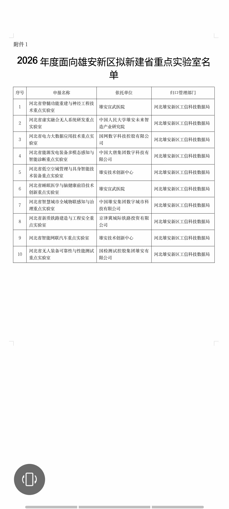

2026年7月20日，河北省虚实融合无人系统研发重点实验室（Key Laboratory of Real-virtual Integrated Autonomous Systems，RIAS）获批建立。实验室为学科类省重点实验室，依托中国人民大学雄安未来智造产业研究院建设，由王永才教授担任实验室主任。
同日，有关部门发布《关于2026年度面向雄安新区拟新建省重点实验室和省技术创新中心的公示》。根据公示附件《2026年度面向雄安新区拟新建省重点实验室名单》，河北省虚实融合无人系统研发重点实验室位列拟新建省重点实验室第 2 项，依托单位为中国人民大学雄安未来智造产业研究院，归口管理部门为河北雄安新区工信科技数据局。

实验室面向新一代人工智能、未来产业与智能无人系统等战略需求，聚焦实景重建与虚实映射、群体智能体协同感知、多智能体协同决策与优化、虚实融合的多智能体云脑平台与测试系统，以及跨域智能集群落地转化等方向，贯通「基础研究—技术攻关—系统集成—场景示范」全链条。
转载来源：关于2026年度面向雄安新区拟新建省重点实验室和省技术创新中心的公示（微信公众号原文）